アクションからテキストを出力する
利用者へ返す結果はビューであるテンプレートを使って通常作成しますが、簡単なテストを行ないたい場合などにアクションから直接結果を返したい場合もあります。ここではrenderメソッドを使って利用者へテキストを出力する方法について解説します。
1.テキストを出力する
2.DoubleRenderError
3.何も出力しない
4.statusオプション
5.layoutオプション
テキストを出力する
リクエスト元へ直接出力を行なうには render メソッドを使います。render メソッドでは何を返すのかによって使い方が色々とあるのですが、テキストを出力する場合は次の書式を使います。
render :text => 'テキスト'
文が実行された時に指定したテキストを利用者へ出力します。
では実際に試してみます。「sample」アプリケーションの中に新しく「movies」コントローラを作成し、さらに「index」アクションを同時に作成します。
rails generate controller movies index
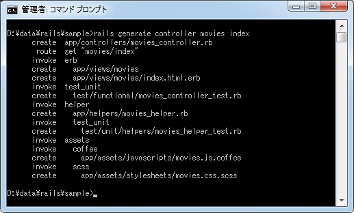
作成されたコントローラクラス(app/controllers/movies_controller.rb)の中の「index」アクションメソッドを次のように修正します。
class MoviesController < ApplicationController
def index
render :text => 'Hello'
end
end
では「sample」アプリケーションを実行し、ブラウザから「http://localhost:3000/movies/index」へアクセスして下さい。すると次のように表示されます。
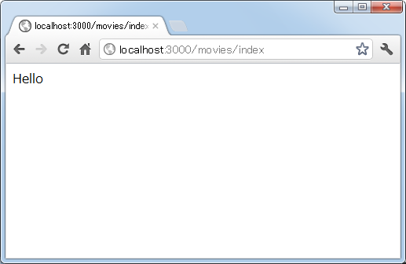
このようにアクションから利用者に対して結果を直接返すことができました。
DoubleRenderError
なお「index」アクションの名前が付いた「index.html.erb」テンプレートファイルも作成されているのですが今回はテンプレートは呼び出されていません。これは利用者からのリクエストに対して結果を返せるのは一度だけだからです。「render :text」を使って結果を返した場合は、自動的にテンプレートを呼び出すことはしません。
試しに「render :text」メソッドを呼び出した後で、明示的にテンプレートを呼び出すような記述を行なってみます。
class MoviesController < ApplicationController
def index
render :text => 'Hello'
render 'index'
end
end
再度ブラウザから「http://localhost:3000/movies/index」へアクセスして下さい。すると次のようにエラーが表示されます。
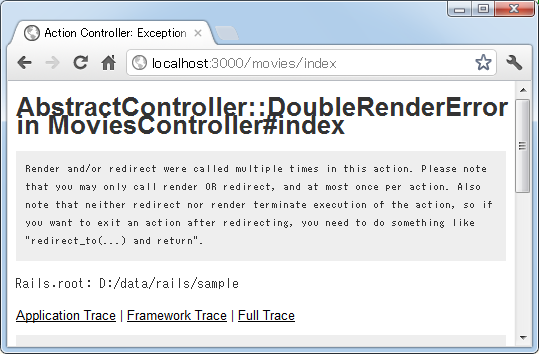
エラーは「AbstractController::DoubleRenderError」で二度レンダリング(結果を返すこと)を行なおうとした場合に表示されます。またエラーになることから分かる通り「render :text」文を実行してもメソッドは終了せず次の文へ処理が進む点に注意して下さい。
何も出力しない
利用者からのリクエストに対して何かを返す必要はあるのですが、何も表示したくない場合には「render :nothing」を使います。
render :nothing => true
リクエストに対してスタータスコードとして200を返しますが、コンテンツとしては何も返しません。
では試してみます。「index」アクションメソッドを次のように修正します。
class MoviesController < ApplicationController
def index
render :nothing => true
end
end
ブラウザから「http://localhost:3000/movies/index」へアクセスして下さい。すると次のように表示されます。
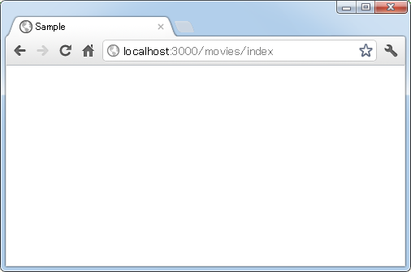
画面上には何も表示されませんが、アプリケーションから結果は返ってきてはいます。確認のためコマンドプロンプトからcurlを使って問い合わせを行なってみます。
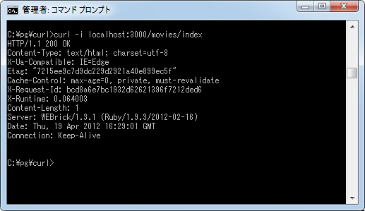
スタータスコード 200が返ってきていることが確認できます。
statusオプション
statusオプションを使用すると任意のステータスコードを返すことができます。
render :text => 'テキスト', :status => 404 render :nothing => true, :status => 403
では試してみます。「index」アクションメソッドを次のように修正します。
class MoviesController < ApplicationController
def index
render :text => 'Not Found', :status => 404
end
end
ブラウザから「http://localhost:3000/movies/index」へアクセスして下さい。すると次のように表示されます。
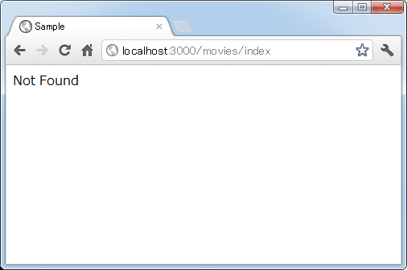
画面上には「render :text」で出力されたテキストが表示されています。それではスタータスコードを確認するためにコマンドプロンプトからcurlを使って問い合わせを行なってみます。
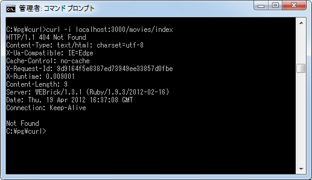
スタータスコード 404が返ってきていることが確認できます。
layoutオプション
renderメソッドを使ってテキストを出力した場合、出力したテキストだけが利用者へ返されます。
class MoviesController < ApplicationController
def index
render :text => 'Hello'
end
end
上記のアクションを呼び出すとブラウザ上に次のように表示されます。
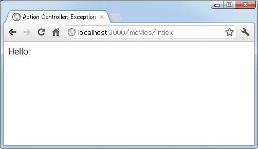
ソースを確認してみると次のように出力したテキストだけが返ってきていることが分かります。
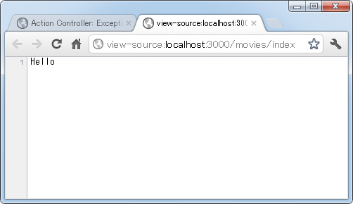
そこでrenderメソッドを使ってテキストを出力する場合にlayoutオプションを付けると、レイアウトが適用された上で利用者へ結果が返されます。(レイアウトについては「レイアウトの利用」を参照して下さい。簡単に言えば予め用意されたHTMLのヘッダとフッタが自動的に付くようなものです)。
render :text => 'テキスト', :layout => true
では試してみます。「index」アクションメソッドを次のように修正します。
class MoviesController < ApplicationController
def index
render :text => 'Hello', :layout => true
end
end
ブラウザから「http://localhost:3000/movies/index」へアクセスして下さい。すると次のように表示されます。
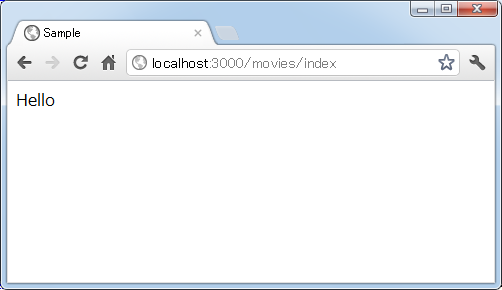
表示される結果は先程と変わっていません。ではソースを確認してみます。
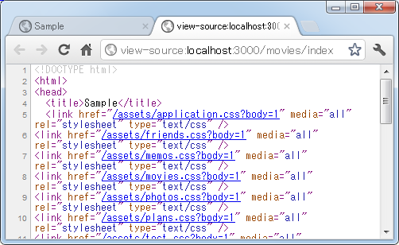
layoutオプションを付けていなかった時はテキストだけが返ってきていましたが、今度はレイアウトとして用意されたHTMLのヘッダとフッタが付けられた上で返されてきていることが確認できます。
( Written by Tatsuo Ikura )

著者 / TATSUO IKURA
初心者～中級者の方を対象としたプログラミング方法や開発環境の構築の解説を行うサイトの運営を行っています。